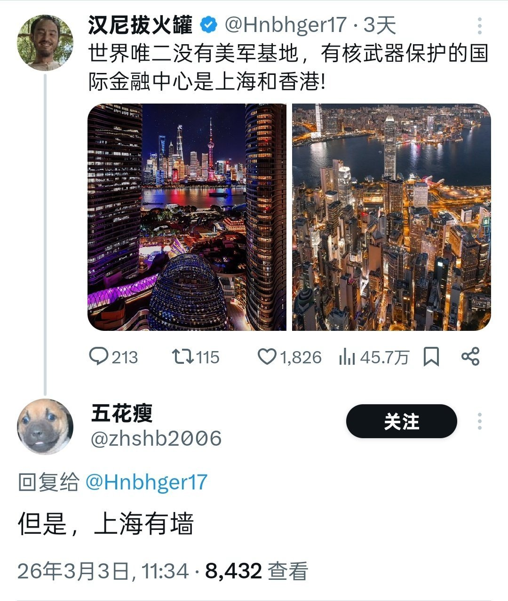

马库斯爱吃蛋糕💊
@seeyouinthe2999
@Droplet_Express 世界上没有完美的国家不代表我们不追求完美，中国(不含台湾）的民主制度和言论自由就是有很大问题，虽然这为国家机器的效率增加了上限但是也会导致国家出现的错误政策很难及时撤回

红咖喱🚗🚗🚗
@Droplet_Express
刚封墙的时候我也疑惑，因为不能上维基百科和谷歌地球，两个当时我最喜欢的、我认为无害的软件，后来也好多年没上外网。这两年用VPN轻松翻墙再看，妙啊！这哪是拦着里面的出去，这分明就是挡着外面乱糟糟的垃圾毒物进来啊，保护国人尤其是小朋友和心智不成熟的年轻人功不可没啊！害得是我党英明神武🙃 https://t.co/VeqdjKmIof